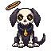

Pets that grow
Every pet gets a level, 1 to 50, and earns it by being out with you. It grows fastest doing the thing it's good at: a Stormling learns from your fishing, a Crystal Crab from your mining. At 15, 35 and 50 it changes: bigger, a trait you choose, and at 50 it becomes an Elder, with its own look and one thing no other pet does. Its bonus climbs the whole way. That gives eggs and breeding a goal that lasts months: not just owning the pet, but raising it.
One pet's road
A Bonepup, from the day it drops to the day it's an Elder. The first three stages are the same picture getting bigger, so every pet in the game grows without new art; the Elder is new art, one per kind.
The pet window
The pet tab gains a level bar, the bonus now and at 50, and its trait slots. Pick a pet and drag the level to see it grow.
 Your pet
Your petHow it grows
Hours of play to raise one, by level
About 100 hours of its favourite to raise one to Elder, or 300 doing anything else, before treats, Breeding level and Pedigree, which together can bring a favourite-skill Elder under 40 hours.
Traits
At 15 and at 35 you pick one of two. Every pet chooses from the same six, so the choice is about how you play, not which pet you happened to find. A pet keeps its traits forever, and they can be swapped at Bom for tickets.
Every Elder
Level 50: new art, a gold ring under its feet, "Elder" on its tag, and its own trait. One per kind, so every pet in the game is worth raising for something only it can do. Greaters and Legendaries become Elders too, with their kind's trait and their own glow.
Growing and breeding
This is the part that has to fit exactly, because the game already has a whole system for making better pets: drops and eggs make Ordinary pets, the hatchery turns an egg into one, the pen breeds two Ordinaries into a Greater (12 hours, 18 Greater food) with one stat picked from each parent, a quarter stronger, two Greaters of a kind into its Legendary (72 hours, 36 Legendary food, Breeding 50) which keeps its own powers and adds the two picks, and both parents come back. Growth sits on top of all of that without changing any of it. The one rule that makes it safe:
Why: if growth were passed down, every generation would stack
The Bonepup's walking speed, down the line from an Ordinary to its Legendary, each one raised to Elder before it's bred.
The rule keeps a raised Legendary where breeding already puts it, times 1.4: a Cerberpup tops out at +19.6% walking speed, under the game's cap of 50. Inherited, the same Cerberpup would be +27.4%, nearly twice what a Legendary gives today, and a Greater bred from an unraised pet would be a mistake nobody could undo, so every pet would have to be raised before it could be bred at all.
What raising a parent does pass on
The pen, with growth in it
The penGreater · 12 hours · 18 Greater pet food
Old BonehoundOrdinary · Elder · lvl 50Traits: Fetch, Guard Pack RatOrdinary · Prime · lvl 38Traits: Forager, Lucky
Pack RatOrdinary · Prime · lvl 38Traits: Forager, Lucky A Greater Bonepup (Bonepup's look)
A Greater Bonepup (Bonepup's look)Starts at level 1 with walk speed +10% and bag slots +5 (the picks, a quarter stronger, as today).
Pedigree ★★★ grows 75% faster (Elder +50%, Prime +25%).
Can inherit: Fetch, Guard, Forager, Lucky as extra choices at 15 and 35.
Old Bonehound and the Pack Rat come back in 12 hours exactly as they went in.
The perfect pet, from scratch
About 400 hours, most of it raising, with the pen's clocks running while you play. A goal measured in months, built entirely from the system the game already has.
Every other case
Showing it off
The pet's level is on its tag in the world, and an Elder stands out at a glance. Only an Elder goes to chat.
Building it
- Four small fields per pet: its pet XP, its two traits, its pedigree (0-4 stars) and who raised it, on the record that already carries its id, kind, name, rank and its own stats. They travel through the bank, trades, the Exchange and the pen the way the rank does.
- The pen changes in one place: the picks already read
petStats, the pet's own stats, and growth is applied later inpetFx, so the rule "born with, not learned" is what the code does if it's left alone. Collect adds the pedigree and the inheritable traits to the child. - XP goes in where the player's XP goes in: the same function adds a share to the pet out. No new loop, no poll; the page hears a level-up only when one happens.
- The bonus is petFx's number times (1 + 0.4 × (level − 1) / 49), so every existing effect grows with one line. The caps already in the game (walking speed's 50, swing's 0.2) still hold.
- The stages are a draw size (75%, 100%, 115%) plus the Elder art. The first three need no new pictures; the Elders need one each, about fifteen PixelLab pieces for the base kinds.
- Traits are hooks that mostly exist: Fetch is picking up a drop, Forager is the Mimic's gift on a timer, Guard is damage taken, Cheer is XP, Lucky is the rare-drop roll. The Elders' own traits are one each and can ship one at a time.